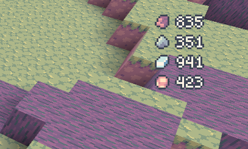
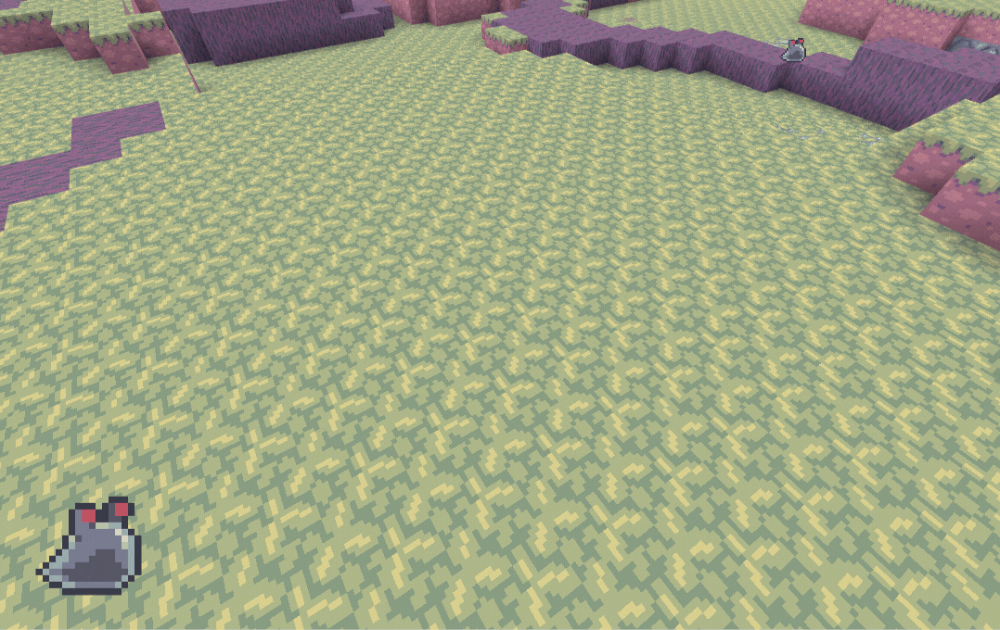

MiniForts

A game about building and defending a fort.
In 2021, I made a small base-builder RTS game. It runs on the Minetest voxel game engine.
The goal of this game is to defend a central core from invaders. The player commands minions to build up a fort around the core.

Minions are indirectly commanded by putting construction orders in the world.
It has some rudimentary physics, where structures disconnected from the ground get destroyed.

The game is not complete, but it’s decent enough for a few minutes of gameplay.

The game’s development slowed down to a halt as I found myself being more and more limited with Minetest’s API and engine design - particularly its client-server design.
I guess it’s partly my fault. Minetest is a first-person creative-survival voxel game "engine" - a Minecraft clone, if you will. It’s not particularly suited for a base-builder RTS experience.
Here, I’ll write about some of the major limitations and the solutions I came up with.
The scripting language
My first problem was Lua. I didn’t like Lua. It’s not type-safe and lacks some of the modern expressions like the conditional (ternary) operator.
To solve this, MiniForts was written in TypeScript. Then I used TypeScriptToLua.
With the addition of .d.ts declaration files, I was able to use Minetest’s API in a type-safe way. It also unlocks fancy OOP, which is very useful in developing a game.
The GUI engine
Another problem is Minetest’s GUI system. It’s not very usable. It has absolute positioning and a lack of nesting or layouting. Interaction and UI updates are procedural.
To solve this I used JSX, an XML-like syntax for defining UI in code.
But there isn’t anything in Minetest that knows how to render JSX elements, so I had to create a GUI engine within the game that takes in JSX elements and renders it via Minetest’s APIs.
The end-result is a more flexible GUI system, with bonus reactive data-binding and callbacks.
 Minetest’s formspec
Minetest’s formspec
 JSX (TSX) version
JSX (TSX) version
Here’s one layout that I’ve implemented. It’s the radial layout that renders an arbitrary number of elements in a circular fashion:
Here’s another example which is the HUD that shows the player’s current resources in the upper-right corner of the screen.


It was fun recreating a React-like environment on top of a very limited GUI API.
I’ve only been able to use it for the HUD so far, but I imagine it would be very useful when doing RTS-type build menus. Or maybe even for changing door states and swapping ballista ammo.
Pathfinding
Minetest has an ground-based A* pathfinding algorithm, implemented in C++, exposed via the Lua API.
I’ve found that the built-in pathfinder wasn’t sufficient for this game. This game has multiple agents with different locomotion types, a complex 3D terrain, and destructible walls.
I ended up implementing a hierarchical pathfinding algorithm with a structure similar to RimWorld’s region system, also inspired by Castle Story’s pathfinder.
The system divides the world into components, each of which contains a set of positions reachable from one another.
 Component debug view
Component debug view
The pathfinder then finds a path through the components first, which is very fast, and only resolving voxel-level paths when the agent is moving within a component.
World generation
Unfortunately, I was only able to create one world type - the forest.
The terrain is a combination of stepped gradient noise maps generated from Minetest’s Perlin noise generator.
The trees are a bit different. They are positioned by placing trees in a grid and randomizing their locations within their grid cell.

And the roots are simply the difference of two gradient noise maps, which creates these snaking patterns, with height falloff based on the nearest tree.
The art
I like pixel art. It’s easy to make passable results.
Well, it’s not that easy. I struggled with the ground textures a lot.
I realized that what’s more important at this resolution is the readability of something rather than the details of it.

I got a lot of inspiration from The Legend of Zelda: The Minish Cap, which has similar miniature environments.
 Source: Zelda’s Palace
Source: Zelda’s Palace
In the end, I did not publicize this game to the community, either by announcing it in the forum or by uploading it to the community mod repository. I think I intend to finish this game at some point, before releasing a "launch version".
It was great to get back to this game development hobby again.
Source here.